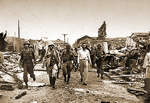

|
j
a v a s c r i p t |
Pg.1/5
February 5, 1945
What a morning! Claims, counterclaims, statements and contradictions; Americans, regular guerrillas, irregular guerrillas, looters, hungry people; fires, explosions, turmoil, chaos.... I'm dizzy from two hours of listening. The bulk of American troops are 15 miles north of Manila, but one Colonel William Chanel Chase liberated the Santo Tomas internees at 1800 Saturday, February 3, after a wild dash from Cabanatuan with only a handful of tanks. Just after noon, the firing increased sharply around the Quiapo district — machine gun, pistol, rifle shots, and what sounded like a close range cannon. It's almost unreal ... here I am on this hill writing as fast as I can while a real war is taking place nearby. Through the window I can see Mrs. Lerocque cooking in the porch of the Bachrach house. A few minutes ago P-40s roared a scant 150 feet above our roofs, and there she is ... still cooking. Nearby, a child is crying or imitating the planes, while the booms of artillery drift in from further away.

Sto. Tomas Guards Escorted
to Neutral Ground Dr. Victor Buencamino: The Americans entered Manila at 1800 last Saturday and liberated Santo Tomas later that evening. About 65 Japanese barricaded themselves in the Education Building with almost 300 internee hostages. A deal must have been struck because the Japanese were escorted to the Santa Mesa Rotonda this morning. I saw them stagger away pulling a cart with a dazed and wounded comrade, exhausted and in full pack but with limited arms. At 1030, a 15-year-old Filipino walked down Santa Mesa towards the Bridge and the Rotonda carrying a huge and brilliant American flag. Behind him followed 18 alert guerrillas, looking around and waving pistols with nonchalance. That's what I call a grand entrance. No Japanese fired at them; none were about. . . . Mrs. Echaus and Luisa: Centro Escolar, Far Eastern University, parts of the San Beda School, old Naric, a Japanese Navy bodega in Raon, Japanese temple at Lepanto, plus some adjacent civilian areas all burned down. They didn't see any American soldiers, just their tanks and some Filipino regulars in blue denim pants and dirty white shirts, acting polite and intelligent. The ladies were bitter about the Japanese, "irregular guerrilleros," and "unintelligent looters." Using matches for light, the latter broke into some bodegas and "accidentally started some fires." In their hysterical excitement, both thought the Americans could have saved the City by quicker and more resolute action. Mrs. Echaus was particularly bitter about the posers, showoffs or brainless idiots. With a little bit of nerve and brains, she thought they could have finished off the Japanese without the slightest trouble. The Quiapo Church did not burn, and neither did the Great Eastern Hotel. Sergio Osmeña Jr. was seen driving a car downtown. |
|
|
|
|